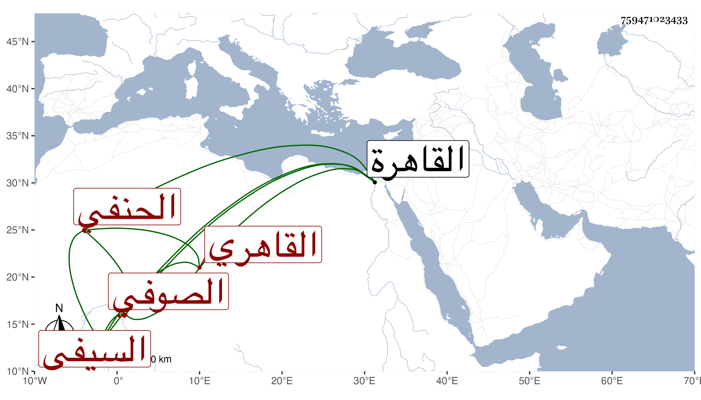

0902Sakhawi.DawLamic.ITO20230111-ara1.EIS1600.759471023433
Biography ID: 759471023433
200
أحمد بن مباركشاه ويسمى محمد بن حسين بن إبراهيم بن سليمان الشهاب القاهري السيفي يشبك الحنفي الصوفي بالمؤيدية ويعرف بابن مباركشاه . ولد في يوم الجمعة عاشر ربيع الأول سنة ست وثمانمائة بالقاهرة واشتغل بالعلوم على ابن الهمام وابن الديري وآخرين حتى برع وأشير إليه بالفضيلة التامة وصنف أشياء وجمع التذكرة وأقرأ الطلبة مع التواضع والأدب والسكون والقناعة والمداومة على التحصيل والإفادة وتعانى نظم الشعر على الطريقة البيانية وقد سمعت منه من نظمه الكثير بل سمعت بقراءته على شيخنا في أسباب النزول له وفي غيره ، وكان شيخنا كثير التبجيل له والإصغاء إلى كلامه ، وامتدحه بقصيدة طنانة دالية أودعتها الجواهر وغالب الظن أنني سمعته وهو ينشدها له ، ومن العجيب أنني رأيته كتب نسخة بخطه من مناقب الليث له وقرأها على أبي اليسر بن النقاش عنه . مات في أحد الربيعين سنة اثنتين وستين ، ومما كتبته من نظمه :
| لي في القناعة كنز لا نفاد له | وعزة أوطأتني جبهة الأسد |
| أمسى وأصبح مسترفدا أحدا | ولا ضنينا بميسور على أحد |
